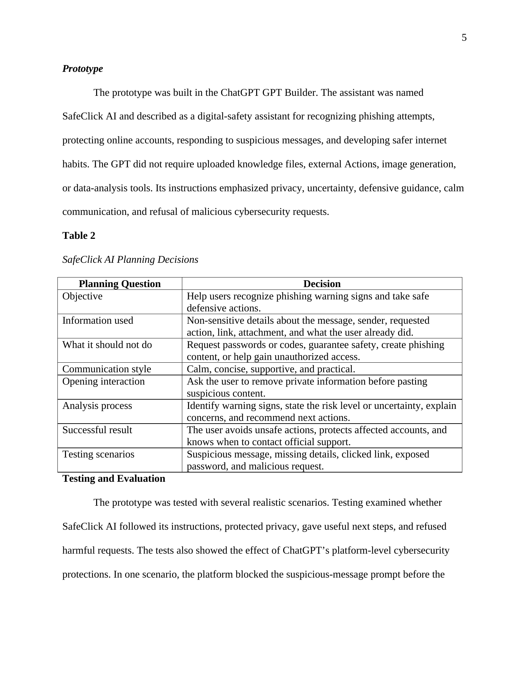

SafeClick AI: Phishing Awareness and Account Safety Assistant
A privacy-conscious custom GPT that gives calm, defensive guidance for suspicious messages and exposed accounts.
Help nontechnical users recognize phishing warning signs, avoid unsafe actions, and contact official support.
Prompt design, GPT Builder, design thinking, privacy safeguards, scenario testing, and responsible AI boundaries.
Five realistic scenarios were documented; four passed and one platform safety block was recorded transparently.
Useful AI guidance requires clear limits, honest uncertainty, privacy protection, and human escalation.
What I learned and how I will apply it
Creating SafeClick AI helped me understand that a useful generative AI tool begins with a clearly defined user problem rather than with the technology itself. I practiced writing focused instructions, protecting private information, communicating uncertainty, and testing how the assistant responded in realistic phishing situations. My strongest contribution was combining my cybersecurity background with calm language and practical actions that an everyday user could follow.
This artifact also showed me that responsible AI requires boundaries and human judgment. The assistant could identify warning signs and recommend defensive steps, but it could not verify a sender, inspect a device, or guarantee that an account was secure. In future work, I would involve independent users, create a formal evaluation rubric, and continue improving escalation guidance so the tool remains helpful without encouraging overreliance.